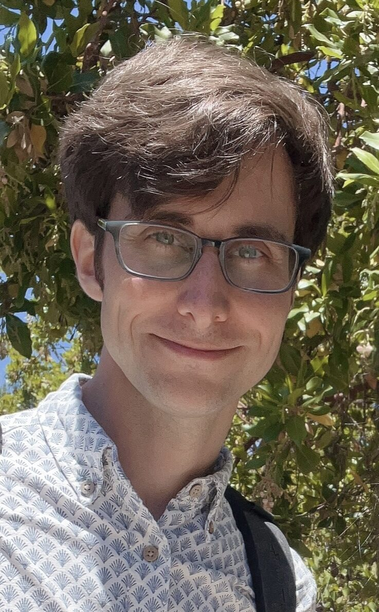

About

I’m a physicist and educator with a background in astrophysics. I study cosmic rays, especially the origins of the most energetic particles in the universe.
My research connects astrophysics and plasma physics: accretion shocks in galaxy clusters and filaments, magnetic turbulence, diffusive shock acceleration, and observations involving neutrinos and photons.
I completed my Ph.D. under the supervision of Roger Blandford, studying plasma instabilities and the acceleration of Galactic cosmic rays in supernova remnants. My current work focuses on the acceleration of extragalactic cosmic rays by large-scale structure shocks and their observational signatures.
I also serve as a science education fellow at Stanford University, where I occasionally teach physics and astrophysics. I’m especially interested in physics education research, and I enjoy using common misconceptions as teaching tools.